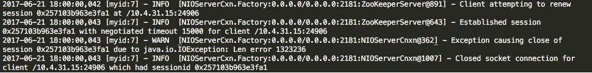
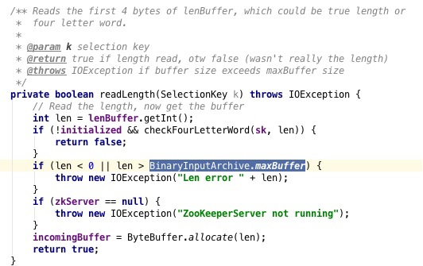
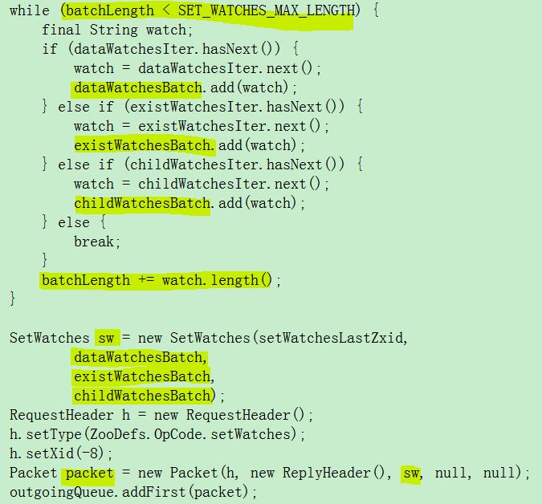
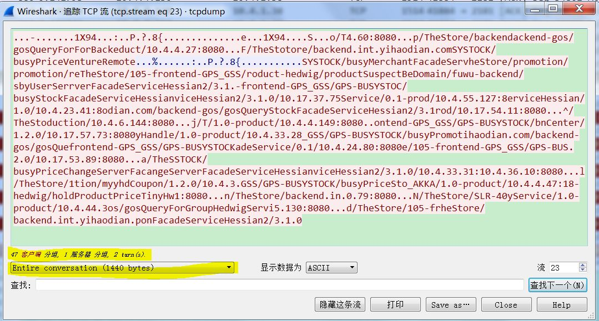
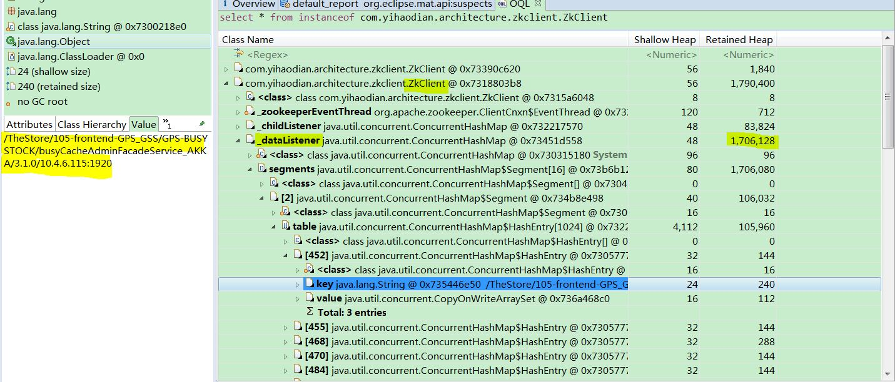

背景
按正常的流程，服务提供者上下线，zookeeper会通知到服务客户端，也就是说服务客户端会自动感知到服务的当前状态。但是每隔数月我们会接到同样的问题，说是服务客户端的状态通知丢失了，每次涉及机器比较少只有一两台，所以怀疑是zk漏发通知导致的偶发现象（zookeeper的早期版本有这个bug）。
随着业务的快速发展，发布的服务和zk节点数量一直在增加，最近一次有40几台机器出现同样状况。通过这几天我的排查和实验问题已经定位，根本原因是客户端没有与zk建立有效session，导致对应的watcher没有注册到zk，最终导致zk服务端不会推送对应的节点变更。
下面来剖析session创建不成功的原因。
排查过程
1. zookeeper服务端日志
通过ZK日志可以看到出，10.4.31.15 这台机器创建zk连接成功，但session创建出现异常导致连接关闭。由于zkclient本身的重连机制，客户端会不断重连服务端，但在session无法创建成功的情况下，watcher并不会注册到服务端所以也不可能受到变更通知。

2. zk源代码
我们来看下导致session创建失败的异常，java.io.IOException: Len error 1323236，通过查询ZK源码我们发现，zk服务端在获取客户端Request前会优先检测请求长度，限制长度通过jute.maxbuffer参数来配置，服务端默认值为1M。如果超过限制的请求，会直接抛拒绝session创建失败。

3.怀疑是ZOOKEEPER-706
调研了一下，ZOOKEEPER-706里的bug和我们看到的异常是一致的。在ZOOKEEPER-706中，如果客户端在session重建的时候做了大量 "set watches"操作，这个时候session会建立失败。
看了ZOOKEEPER-706的patch的代码，代码已经在我们用的zk3.4.7版本里有了，那照道理线上不应该报这个错。通过ZOOKEEPER-706的patch的代码，我们发现zk客户端在重连的过程中会对大于128K的watches长度进行拆包，把大于1M的包拆成128k的Packet，然后放到outgoingQueue中，如下图。这样就不会产生java.io.IOException: Len error异常。

4. 消息体验证
想通过zookeeper服务端消息和hedwig客户端来看一下收发的消息到底是什么。
4.1） zookeeper服务端抓包，消息体验证
在线上的zk服务器节点抓包，看看到底是什么请求超过1M呢，进行了TCP dump结果发现都是很小的包（如下图wireshark里看到的1k左右的消息），没找到大于1M的消息。后面通过查看代码发现客户端会先把请求长度发给服务端做检测而不是直接发内容。

4.2）客户端watches大小验证
客户端做了一个heap dump，看到一个ZkClient里watches的大小大于1M，为1.7M左右。 会触发ZOOKEEPER-706异常 。

总结：
最后找到的问题是，应用把hedwig的zk3.4.7在pom.xml里exclude掉了，用的是zk3.4.3版本，ZOOKEEPER-706的patch当然没有打上，线上产生这个错误也是正常的。
最后把zk3.4.3升级为zk3.4.7版本，这个问题解决了。